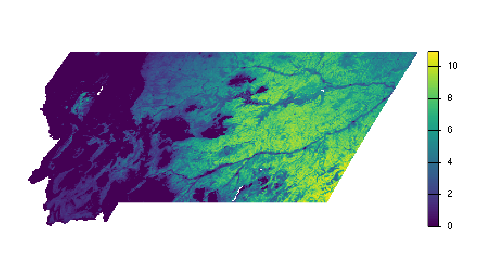
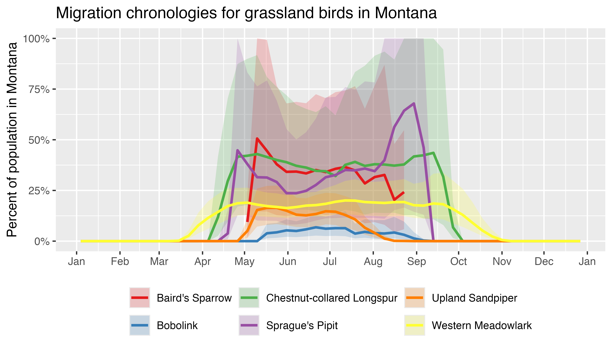

This vignette will cover a variety of common applications of the eBird Status Data Products including producing maps, plotting migration chronologies, and estimating the proportion of the population of a species within a region. In the introductory vignette we worked with the small example dataset for Yellow-bellied Sapsucker, which does not require a data access key to download. To provide more realistic examples, throughout this vignette we will use complete datasets for several species. As a result, a data access key is required to run the code in this vignette.
We start by loading the packages used throughout this vignette.
library(dplyr)
library(ebirdst)
library(fields)
library(ggplot2)
library(lubridate)
library(rnaturalearth)
library(sf)
library(terra)
library(tidyr)
extract <- terra::extractMapping relative abundance
In this section, we’ll demonstrate how to make a simple map of relative abundance within a given region. As an example, we’ll make a map of breeding season relative abundance for Sage Trasher in Wyoming. The maps produced using this approach are suitable for many applications; however, for high-quality publication-ready maps, it may be worthwhile using a traditional GIS environment such as QGIS or ArcGIS rather than R.
We start by downloading data for Sage Thrasher and loading the
breeding season relative abundance raster. The pattern
argument to ebirdst_download_status() can be used to only
download the specific files we need.
# download the yellow-bellied sapsucker data
ebirdst_download_status("sagthr",
pattern = "abundance_seasonal_mean")
# load seasonal mean relative abundance at 3km resolution
abd_seasonal <- load_raster("sagthr",
product = "abundance",
period = "seasonal",
metric = "mean",
resolution = "3km")
# extract just the breeding season relative abundance
abd_breeding <- abd_seasonal[["breeding"]]The simplest way to map the seasonal relative abundance data is to
use the built in plot() function from the
terra package.
plot(abd_breeding, axes = FALSE)
Clearly this simple approach doesn’t work very well! There are a wide variety of issues that we’ll tackle one at a time.
Cropping and masking
All raster data downloaded through this package are defined over the
same global grid, regardless of the range of the individual species. As
a result, mapping these data will produce a global map by default.
However, Sage Thrasher only occurs in the western United States, which
is barely visible in the global map. We need to constrain the extent of
our map to make it more useful. For this example, we’ll download a
boundary for Wyoming (a state in the United States that harbors a large
proportion of the breeding population of Sage Thrasher) and use it to
crop and mask the relative abundance data. If you have a region defined
in a Shapefile or GeoPackage you can instead load that a polygon
defining the boundary of that region using read_sf().
# wyoming boundary
region_boundary <- ne_states(iso_a2 = "US") |>
filter(name == "Wyoming")
# project boundary to match raster data
region_boundary_proj <- st_transform(region_boundary, st_crs(abd_breeding))
# crop and mask to boundary of wyoming
abd_breeding_mask <- crop(abd_breeding, region_boundary_proj) |>
mask(region_boundary_proj)
# map the cropped data
plot(abd_breeding_mask, axes = FALSE)
Projection
The raster data are all provided in the same equal area sinusoidal projection as NASA MODIS data. While this projection is suitable for analysis, it is not ideal for mapping since it introduces significant distortion. Instead, it’s best to select an equal area projection tailored to your region. A good general purpose choice is a Lambert’s azimuthal equal area projection centered on the focal region. This can be defined programmatically as follows.
# find the centroid of the region
region_centroid <- region_boundary |>
st_geometry() |>
st_transform(crs = 4326) |>
st_centroid() |>
st_coordinates() |>
round(1)
# define projection
crs_laea <- paste0("+proj=laea +lat_0=", region_centroid[2],
" +lon_0=", region_centroid[1])
# transform to the custom projection using nearest neighbor resampling
abd_breeding_laea <- project(abd_breeding_mask, crs_laea, method = "near") |>
# remove areas of the raster containing no data
trim()
# map the cropped and projected data
plot(abd_breeding_laea, axes = FALSE, breakby = "cases")Abundance bins
The relative abundance data are not uniformly distributed, which can
lead to challenges distinguishing areas of differing levels of
abundance. This is especially true for highly aggregatory species like
shorebirds and ducks. To address this, we’ll use a quantile bins for the
map, where each color in the legend corresponds to an equal number of
cells in the raster. We’ll define these bins excluding zeros, then
assign a separate color to the zeros. We can also use the function
abundance_palette() to get the same set of colors we use in
the legends on the eBird Status and Trends website.
# quantiles of non-zero values
v <- values(abd_breeding_laea, na.rm = TRUE, mat = FALSE)
v <- v[v > 0]
breaks <- quantile(v, seq(0, 1, by = 0.1))
# add a bin for 0
breaks <- c(0, breaks)
# status and trends palette
pal <- ebirdst_palettes(length(breaks) - 2)
# add a color for zero
pal <- c("#e6e6e6", pal)
# map using the quantile bins
plot(abd_breeding_laea, breaks = breaks, col = pal, axes = FALSE)
Basemap
Finally, we’ll add state and country boundaries to provide some
context and generate a nicer legend. The R package
rnaturalearth is an excellent source of attribution free
contextual GIS data.
# natural earth boundaries
countries <- ne_countries(returnclass = "sf") |>
st_geometry() |>
st_transform(crs_laea)
states <- ne_states(iso_a2 = "US") |>
st_geometry() |>
st_transform(crs_laea)
# define the map plotting extent with the region boundary polygon
region_boundary_laea <- region_boundary |>
st_geometry() |>
st_transform(crs_laea)
plot(region_boundary_laea)
# add basemap
plot(countries, col = "#cfcfcf", border = "#888888", add = TRUE)
# add relative abundance
plot(abd_breeding_laea,
breaks = breaks, col = pal,
maxcell = ncell(abd_breeding_laea),
legend = FALSE, add = TRUE)
# add boundaries
lines(vect(countries), col = "#ffffff", lwd = 3)
lines(vect(states), col = "#ffffff", lwd = 1.5, xpd = TRUE)
lines(vect(region_boundary_laea), col = "#ffffff", lwd = 3, xpd = TRUE)
# add legend using the fields package
# label the bottom, middle, and top
labels <- quantile(breaks, c(0, 0.5, 1))
label_breaks <- seq(0, 1, length.out = length(breaks))
image.plot(zlim = c(0, 1), breaks = label_breaks, col = pal,
smallplot = c(0.90, 0.93, 0.15, 0.85),
legend.only = TRUE,
axis.args = list(at = c(0, 0.5, 1),
labels = round(labels, 2),
col.axis = "black", fg = NA,
cex.axis = 0.9, lwd.ticks = 0,
line = -0.5))Migration chronologies
In this application we’ll use the weekly estimates to chart the change in relative abundance throughout the year for a given region. We’ll start by generating a trajectory with confidence intervals for a single species, then demonstrate how to produce multi-species trajectories. For these examples, we’ll consider shorebirds in Kansas (a state in center of the United States). To start we’ll load a polygon for the boundary of Kansas.
Single species with uncertainty
For the single species example, let’s chart a migration chronology for Snowy Plover in Kansas. First we need to download and load the relevant eBird Status Data Products for this species: the weekly median relative abundance and the upper and lower confidence intervals of weekly relative abundance.
# download data if they haven't already been downloaded
ebirdst_download_status("Snowy Plover",
pattern = "abundance_(median|upper|lower)_3km")
# load raster data
abd_median <- load_raster("snoplo5", product = "abundance", metric = "median")
abd_lower <- load_raster("snoplo5", product = "abundance", metric = "lower")
abd_upper <- load_raster("snoplo5", product = "abundance", metric = "upper")
# project region boundary to match raster data
region_boundary_proj <- st_transform(region_boundary, st_crs(abd_median))Now we can calculate the mean relative abundance with confidence intervals for each week of the year within Kansas.
# extract values within region and calculate the mean
abd_median_region <- extract(abd_median, region_boundary_proj,
fun = "mean", na.rm = TRUE, ID = FALSE)
abd_lower_region <- extract(abd_lower, region_boundary_proj,
fun = "mean", na.rm = TRUE, ID = FALSE)
abd_upper_region <- extract(abd_upper, region_boundary_proj,
fun = "mean", na.rm = TRUE, ID = FALSE)
# transform to data frame format
abd_median_region <- data.frame(week = as.Date(names(abd_median_region)),
median = as.numeric(abd_median_region[1, ]))
abd_lower_region <- data.frame(week = as.Date(names(abd_lower_region)),
lower = as.numeric(abd_lower_region[1, ]))
abd_upper_region <- data.frame(week = as.Date(names(abd_upper_region)),
upper = as.numeric(abd_upper_region[1, ]))
# combine median and confidence intervals
chronology <- abd_median_region |>
inner_join(abd_lower_region, by = "week") |>
inner_join(abd_upper_region, by = "week")Finally, let’s use this data frame to generate a migration chronology for this species.
ggplot(chronology) +
aes(x = week, y = median) +
geom_ribbon(aes(ymin = lower, ymax = upper), alpha = 0.2) +
geom_line() +
scale_x_date(date_labels = "%b", date_breaks = "1 month") +
labs(x = "Week",
y = "Mean relative abundance in Kansas",
title = "Migration chronology for Snowy Plover in Kansas")Multi-species
Migration chronologies can also be overlaid for multiple species, allowing for comparison of migration timing between species. However, comparing eBird Status Data Products across species requires extra caution because the models give relative rather than absolute abundance. For example, species differ in their detectability, and this may cause differences in relative abundance. To address this, we’ll use the proportion of population layers, which give the proportion of the total range-wide relative abundance falling within each cell. These proportion of population layers help to control for difference in detectability, allowing us to compare multiple species
Following a similar approach to that used for the single species chronology above, we’ll estimate migration chronologies for a suite of shorebird species in Kansas. However, in this example we’ll estiate the proportion of population falling within Kansas rather than the mean abundance.
species <- c("American Avocet", "Snowy Plover", "Hudsonian Godwit",
"Semipalmated Sandpiper")
chronologies <- NULL
for (species in species) {
# download propotion of population data
ebirdst_download_status(species,
pattern = "proportion-population_median_3km")
# load raster data
prop_pop <- load_raster(species, product = "proportion-population")
# estimate proportion of population within the region
prop_pop_region <- extract(prop_pop, region_boundary_proj,
fun = "sum", na.rm = TRUE, ID = FALSE)
prop_pop_region <- data.frame(species = species,
week = as.Date(names(prop_pop_region)),
median = as.numeric(prop_pop_region[1, ]))
# combine with other species
chronologies <- bind_rows(chronologies, prop_pop_region)
}Finally, we can use this data frame to generate migration chronologies for these species.
ggplot(chronologies) +
aes(x = week, y = median, color = species) +
geom_line(linewidth = 1) +
scale_x_date(date_labels = "%b", date_breaks = "1 month") +
scale_y_continuous(labels = scales::label_percent()) +
scale_color_brewer(palette = "Set1") +
labs(x = NULL,
y = "Percent of population in Kansas",
title = "Migration chronologies for shorebirds in Kansas") +
theme(legend.position = "bottom")
A variety of patterns are revealed in this migration chronology. Semipalmated Sandpiper and Hudsonian Godwit pass through the region during pre-breeding migration, presumably on their way to breed further north, but don’t appear to take the same route on the post-breeding migration. Snowy Plover occurs in the region for much of the year, but with spikes for the pre- and post-breeding migration. Finally, American Avocet also occurs in the region for much of the year, but without the strong peaks during migration.
Regional statistics
The eBird Status and Trends website provides regional summary statistics at the country and state/province level for each species. For example, we can use the regional stats to see that 33% of the non-breeding population of Golen Eagle falls within the United States. The website also allows users to draw their own customs polygons to get summary statistics. within these polygons. However, there are cases where you may want to estimate regional summary statistics in a way that isn’t supported by the website. Here we’ll provide a few examples for calculating the proportion of population within a region. We’ll use Golden Eagle for these examples.
ebirdst_download_status("Golden Eagle")Proportion of seasonal population
For this example, we’ll estimate the seasonal proportion of the population of Golden Eagle within each state in the United States. Note that Golden Eagles are distributed throughout the Northern Hemisphere, in North America, Asia, and Europe. In this example, we’ll be estimating the proportion of the global population, in the next example we’ll estimate the proportion of the North American population.
To start, we’ll load the seasonal proportion of population raster
layers and polygons defining each state. If you have a Shapefile or
GeoPackage defining your region of interest (e.g., for a protected area
or Bird Conservation Region), you could load it here using the
read_sf() function.
# seasonal proportion of population
prop_pop_seasonal <- load_raster("goleag",
product = "proportion-population",
period = "seasonal")
# state boundaries, excluding hawaii
states <- ne_states(iso_a2 = "US") |>
filter(name != "Hawaii") |>
select(state = name) |>
# transform to match projection of raster data
st_transform(crs = st_crs(prop_pop_seasonal))Now we can use the extract() function from
terra to calculate the proportion of the population within
each state for each season. Setting weights = TRUE triggers
extract() to calculate a weighted sum to account to adjust
for partial coverage of raster cells by the region polygons. In this
example, the weights argument has little impact, but it can
play a more important role for smaller regions.
state_prop_pop <- extract(prop_pop_seasonal, states,
fun = "sum", na.rm = TRUE, weights = TRUE,
bind = TRUE) |>
as.data.frame() |>
# sort in descending order or breeding proportion of population
arrange(desc(breeding))
head(state_prop_pop)
#> state breeding nonbreeding prebreeding_migration
#> 1 Alaska 0.059539077 1.246767e-05 0.18449229
#> 2 Wyoming 0.024791619 4.237502e-02 0.02376162
#> 3 Montana 0.021015488 4.665311e-02 0.02299377
#> 4 Nevada 0.014276172 3.525481e-02 0.01667688
#> 5 Utah 0.013512905 3.705198e-02 0.01845320
#> 6 Colorado 0.008481925 2.615300e-02 0.01133763
#> postbreeding_migration
#> 1 0.06922753
#> 2 0.02112028
#> 3 0.03463215
#> 4 0.01537817
#> 5 0.01493372
#> 6 0.01077595Proportion of North American population
For broadly distributed species, such as Golden Eagle, it may be desirable to estimate the proportion of the population relative to a subset of the full range. For example, let’s calculate the proportion of the North American population falling within each state, where we define North America to include the United States, Canada, and Mexico. We’ll start by creating a polygon for the boundary of North America, using this to mask the seasonal relative abundance raster, the dividing the masked relative abundance raster by the total relative abundance across all of North America to generate proportion of population layers.
# seasonal relative abundance
abd_seasonal <- load_raster("goleag",
product = "abundance",
period = "seasonal")
# load country polygon, union into a single polygon, and project
noram <- ne_countries(country = c("United States of America",
"Canada", "Mexico")) |>
st_union() |>
st_transform(crs = st_crs(abd_seasonal)) |>
# vect converts an sf object to terra format for mask()
vect()
# mask seasonal abundance
abd_seasonal_noram <- mask(abd_seasonal, noram)
# total north american relative abundance for each season
abd_noram_total <- global(abd_seasonal_noram, fun = "sum", na.rm = TRUE)
# proportion of north american population
prop_pop_noram <- abd_seasonal_noram / abd_noram_total$sumNow we can calculate the proportion of population using exactly the same method as in the previous section.
state_prop_noram_pop <- extract(prop_pop_noram, states,
fun = "sum", na.rm = TRUE, weights = TRUE,
bind = TRUE) |>
as.data.frame() |>
# sort in descending order or breeding proportion of population
arrange(desc(breeding))
head(state_prop_noram_pop)
#> state breeding nonbreeding prebreeding_migration postbreeding_migration
#> 1 Alaska 0.23794508 0.0000337296 0.35744748 0.16047911
#> 2 Wyoming 0.09942421 0.1146398620 0.04606608 0.04913360
#> 3 Montana 0.08428043 0.1262136568 0.04457747 0.08056719
#> 4 Nevada 0.05725310 0.0953771106 0.03233106 0.03577531
#> 5 Utah 0.05419210 0.1002391073 0.03577476 0.03474136
#> 6 Colorado 0.03401588 0.0707534000 0.02198000 0.02506885Notice that the proportions are higher than those in the previous section since we’re now estimating the proportion of the North American population rather than the proportion of the global population. For example, 6% of the global breeding season population occurs in Alaska, but this corresponds to 24% of the North American breeding season population.
Regional stats for weeks and custom time periods
The eBird Status Data Products include seasonal raster layers that are derived from the weekly rasters based on expert defined seasons. These seasonal layers are convenient to work with, however, in some cases you may want to estimate the proportion of the population within a region at the weekly level or for a custom time period. For example, let’s estimate the proportion of the North American population within California by week and for the month of January.
For this example, we’ll use the lower, 27 km resolution data in the interest of speed, since the 3 km weekly data can be quite slow to process. We’ll start by estimating the weekly proportion of the North American population following an approach similar to that in the previous section.
# weekly relative abundance, masked to north america
abd_weekly_noram <- load_raster("goleag",
product = "abundance",
resolution = "27km") |>
mask(noram)
# total north american relative abundance for each week
abd_weekly_total <- global(abd_weekly_noram, fun = "sum", na.rm = TRUE)
# proportion of north american population
prop_pop_weekly_noram <- abd_weekly_noram / abd_weekly_total$sum
# proportion of weekly population in california
california <- filter(states, state == "California")
cali_prop_noram_pop <- extract(prop_pop_weekly_noram, california,
fun = "sum", na.rm = TRUE,
weights = TRUE, ID = FALSE)
prop_pop_weekly_noram <- data.frame(
week = as.Date(names(cali_prop_noram_pop)),
prop_pop = as.numeric(cali_prop_noram_pop[1, ]))
head(prop_pop_weekly_noram)
#> week prop_pop
#> 1 2022-01-04 0.05982915
#> 2 2022-01-11 0.05356687
#> 3 2022-01-18 0.05547690
#> 4 2022-01-25 0.05428955
#> 5 2022-02-01 0.05839619
#> 6 2022-02-08 0.06418506This data frame gives the weekly proportion of the North American population of Golden Eagle in California; the structure is very similar to the data we generated in the migration chronology section. We can take this one step further and average the proportion of population across the weeks in the month of January.
Coastal species
There is one particular case where the methods for estimate regional statistics presented so far can fail: species with a significant proportion of their population in offshore or tidal areas. Many regional polygons, including those from Natural Earth used so far, only capture the land area, resulting in a large proportion of non-zero relative abundance cells falling outside the polygons. For example, let’s estimate the proportion of the global non-breeding season population of Surf Scoter in Mexico using the naive approach used in the previous examples.
# download only the season proportion of population layer
ebirdst_download_status("Surf Scoter",
pattern = "proportion-population_seasonal_mean_3km")
# breeding season proportion of population
abd_nonbreeding <- load_raster("Surf Scoter",
product = "proportion-population",
period = "seasonal") |>
subset("nonbreeding")
# load a polygon for the boundary of Mexico
mexico <- ne_countries(country = "Mexico") |>
st_transform(crs = st_crs(abd_nonbreeding))
# proportion in mexico
extract(abd_nonbreeding, mexico, fun = "sum", na.rm = TRUE)
#> ID nonbreeding
#> 1 1 0.2049178According to this method, about 20% of the non-breeding population of
Surf Scoter occurs in Mexico. However, Surf Scoter is an exclusively
coastal species and this naive estimate is missing a large part of the
population because the coarse boundary for Mexico we’re using doesn’t
capture many of the 3 km raster cells that are falling offshore. We can
correct for this by buffering the Mexico polygon by 5 km to try to
capture these coastal cells. We’ll also use touches = TRUE
to include raster cells that are touched by the Mexico polygon; without
that argument, only cells whose centers fall within the Mexico polygon
will be included.
# buffer by 5000m = 5km
mexico_buffer <- st_buffer(mexico, dist = 5000)
# proportion in mexico
extract(abd_nonbreeding, mexico_buffer, fun = "sum", na.rm = TRUE,
touches = TRUE)
#> ID nonbreeding
#> 1 1 0.3336408With these adjustments the proportion of the population has increased substantially from 20% to 33%. These approaches are not perfect and care should always be taken when working with eBird Status and Trends Data Products for coastal species.